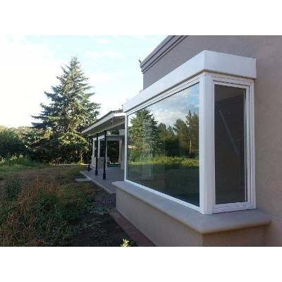

Todo para completar tus proyectos
Es el Sistema de Carpintería de Aluar que ha creado un estándar debido a su diseño y al equilibrio peso/resistencia. Su uso extendido lo transforma en el sistema más tradicional entre los carpinteros argentinos. La línea Módena le brinda al diseñador una gran variedad de combinaciones. Se puede utilizar vidrio simple o Doble Vidriado Hermético (DVH), en las corredizas de aplicación encapsulada y en las batientes con contravidrio de borde recto o curvo. Todas las aberturas son doble contacto y en la ventana de abrir tiene la opción de utilizar cámara condensadora de presiones, lo que le otorga gran resistencia a la infiltración de agua y aire.
Ventana Patagonica Simple Dvh

Paño Fijo Doble Vidrio Dvh 494 Modena Blanco 50x100
$3000
Puerta de entrada simple y dobles
Podemos crear puertas simples y dobles que sean hermosas, de calidad y seguras, completamente hechas a medida para adaptarse al estilo de su hogar y al presupuesto de su familia. Podemos diseñar una puerta de entrada personalizada con vidrio, volutas, mallas, cortes por plasma , herrajes cuidadosamente seleccionados, capa en polvo y una variedad de opciones de acabado.